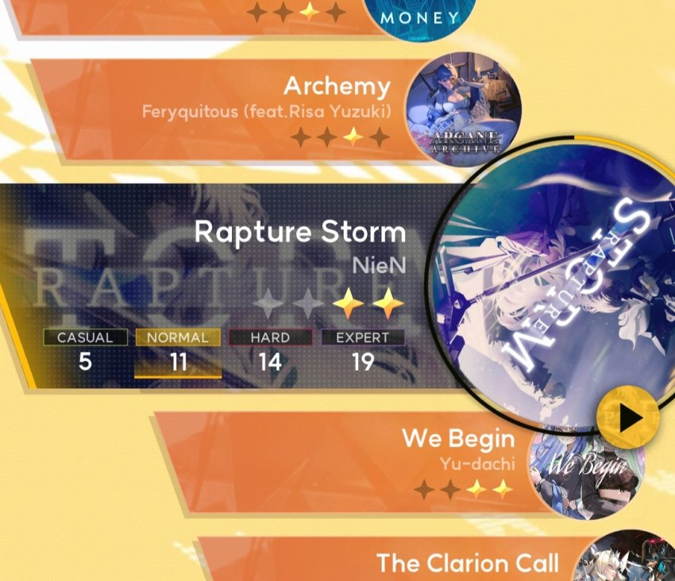
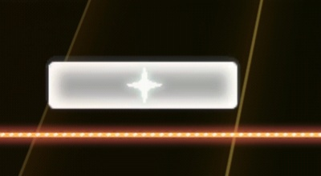
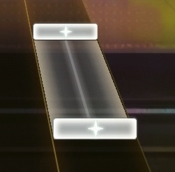
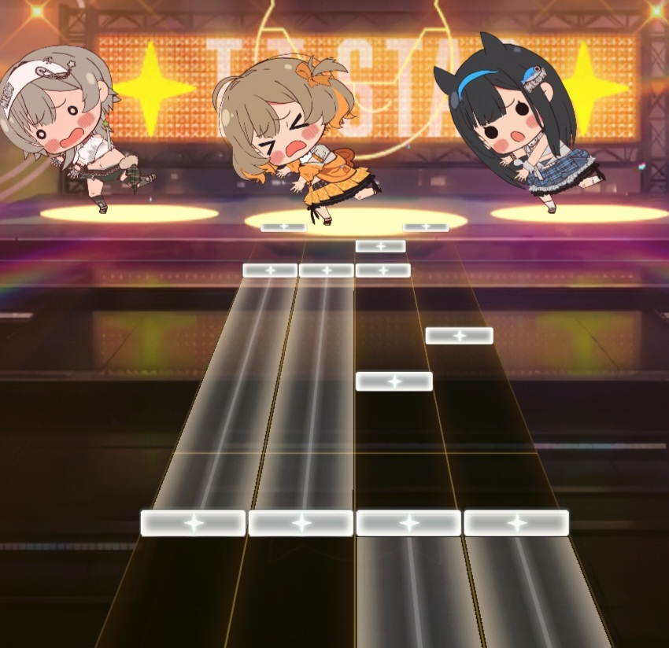
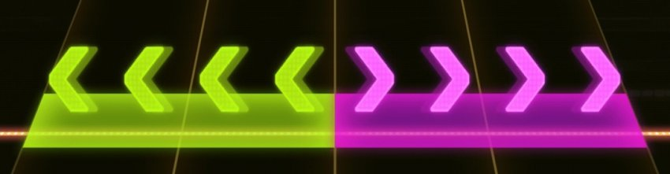
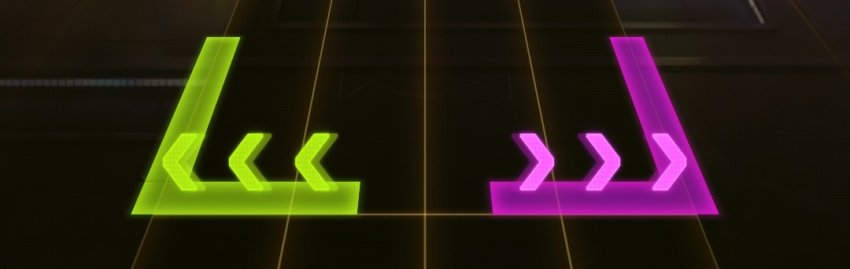
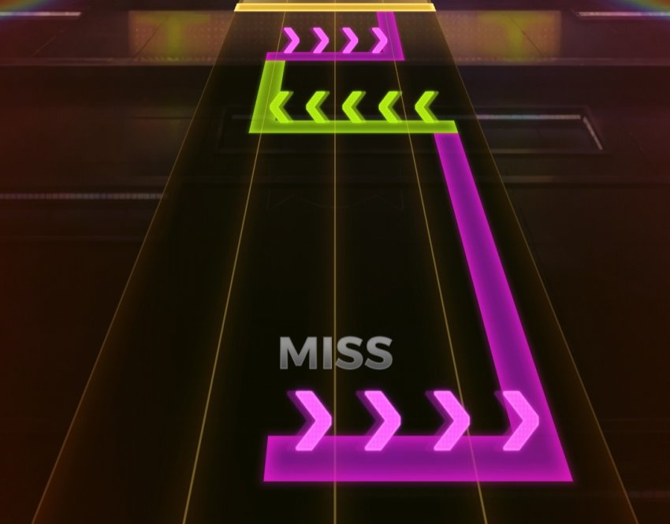
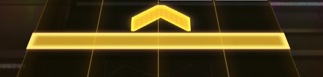
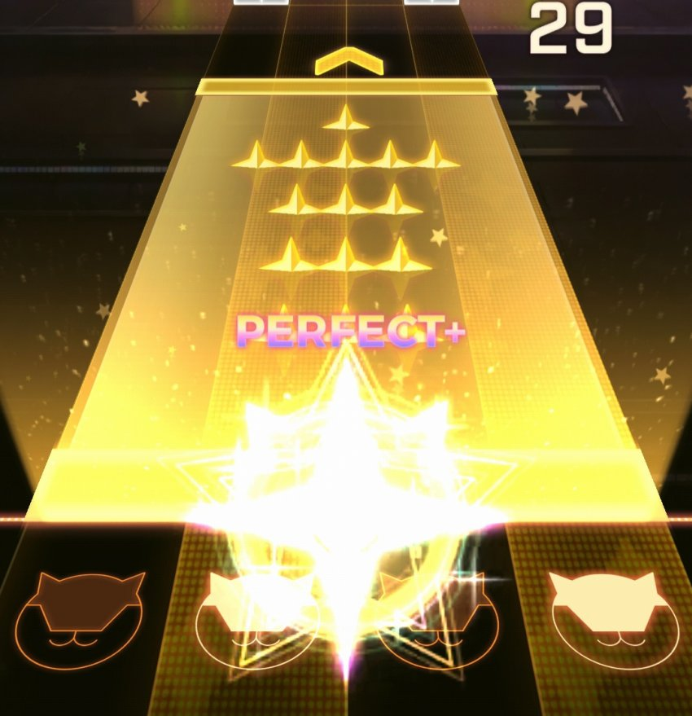

필자는 니케에 리듬게임이 들어왔다기에 감격의 눈물을 흘리고 있다...
아무튼, 노트별로 판정을 알아보자!
단노트

가장 기초적인 노트.
판정선에 닿았을 때 누르자.
참고로 이 게임은 아르케아마냥 노트의 중심이 아니라 '밑면' 에 판정이 있으니 주의하자!!!
롱노트

기초적인 노트 2.
계속 누르고 있자. 틱 판정. (꽤나 틱 속도가 높아서 떼면 미스날 확률이 높음)
떼는 판정도 있음!!!

참고로, CASUAL/NORMAL/HARD에서는 최대 동시치기 수가 2개로 제한되어있지만
EXPERT에서는 동시치기 제한이 풀려서 엄지로 플레이를 못 한다!
꼭 기억해두자!
플릭

말 그대로, 방향에 맞춰서 튕기면 된다.
인식 범위는 위/아래 180도 반원 모양으로, 방향만 대충 맞추면 위로 튕기나 아래로 튕기나 입력이 제대로 들어가진다!
플릭 홀드(드래그)

타이밍 맞춰서 드래그하고 유지하고 있자!
롱노트보다 틱이 후해서 잠깐은 뗐다가 잡아도 OK

이렇게 홀드 여러개가 붙어있는 경우에는 그대로 누르고 슥슥슥 그어줘도 처리가 된다!
뗐다가 처리하느라 판정이 갈리는 일이 없도록 주의하자!
스페셜
금색의 노트다.
안타깝게도 모 게임마냥 점수를 2배로 준다거나, 무조건 최고판정이 뜬다거나 하는 일은 없다...
모바일에서는 4레인 중 아무거나 눌러도 된다!
PC에서는 스페이스바로 따로 처리해야 해서 더 까다로울 듯.
스페셜 플릭

플릭노트랑 비슷하지만
프로세카 플릭마냥 아래로 튕겨도 처리가 된다!!!
나중에는 아예 플릭 난사하는 채보도 나올듯?
스페셜 홀드/스타

역시나 꾸욱 누르고 있자!
참고로 아무 레인 한 개만 누르고 있으면 손을 바꿔도 판정이 유지된다!!!
스타노트는 사실상 틱 보강(롱노트 배점조절)/노트아트(노트로 그림 그리는 거)/세세한 비트 롱노트에 집어넣는 용도.
추가적인 정보들
-이 게임은 100만점+노트 개수(세부판정 1개당 1점 추가, 제보 감사합니다!) 만점제이다.
-S+랭크 = 달성률 100% 이상
-스토리를 안 밀면 기본적으로는 5곡이 '안 보이는 상태'이다.
-판정범위는 널널한 편. 체감상 퍼펙트 기준 +-50ms 정도?
-퍼즈 후 배속 조정 가능, 컨티뉴 이후 약 3초간 카운트다운+노트 리와인드가 되니 침착하자!
-컨티뉴 이후 카운트다운 도중 홈버튼으로 앱을 껐다가 다시 들어가면 음악이 안 나오는 버그가 있다!!!
보상 팁
-그냥 전곡순회 한 번 하세요! 그러면 보상 이것저것에 한정 가챠권까지 뿌려줍니다!!!
-가챠권만 받고싶은데?
->T.T. STAR 소속 곡(...이랑 새틀라이트)만 하세요!
그럼 다들 PERFECT+ 가득한 하루 되시길!